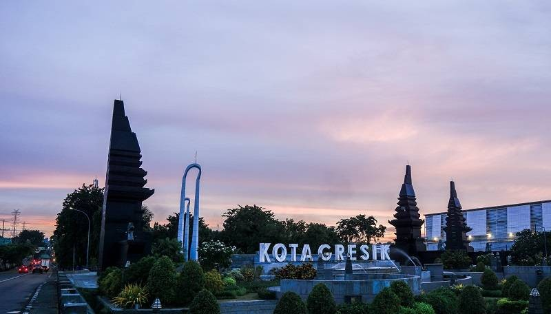
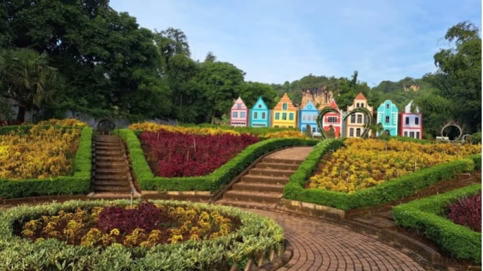
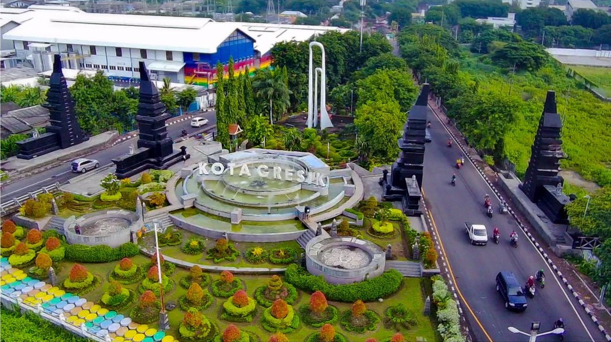
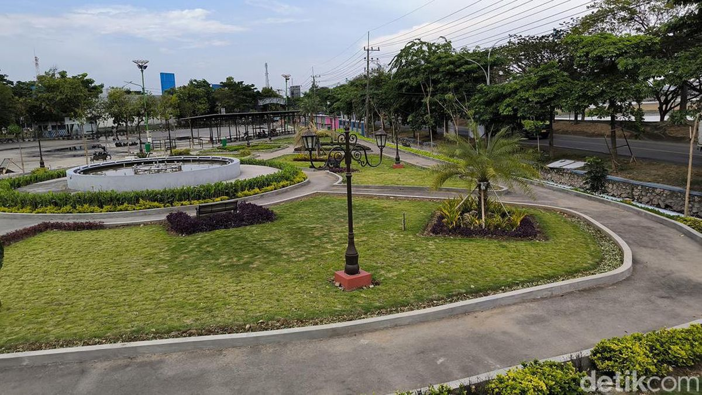

Informasi tentang Wilayah Kabupaten Gresik
Kota Gresik terus tumbuh dan bergerak. Portal ini hadir untuk memvisualisasikan dinamika kepadatan penduduk di setiap sudut wilayah secara presisi.
Melalui pemetaan data yang akurat, kita dapat memahami distribusi warga, mengoptimalkan fasilitas publik, dan memastikan setiap jengkal lahan dikelola demi kenyamanan hidup bersama.




Peta Kepadatan Penduduk - Dengan Visualisasi 3 Kelas Kepadatan